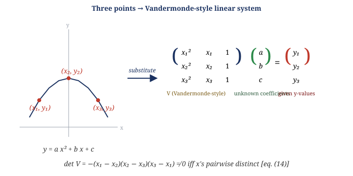
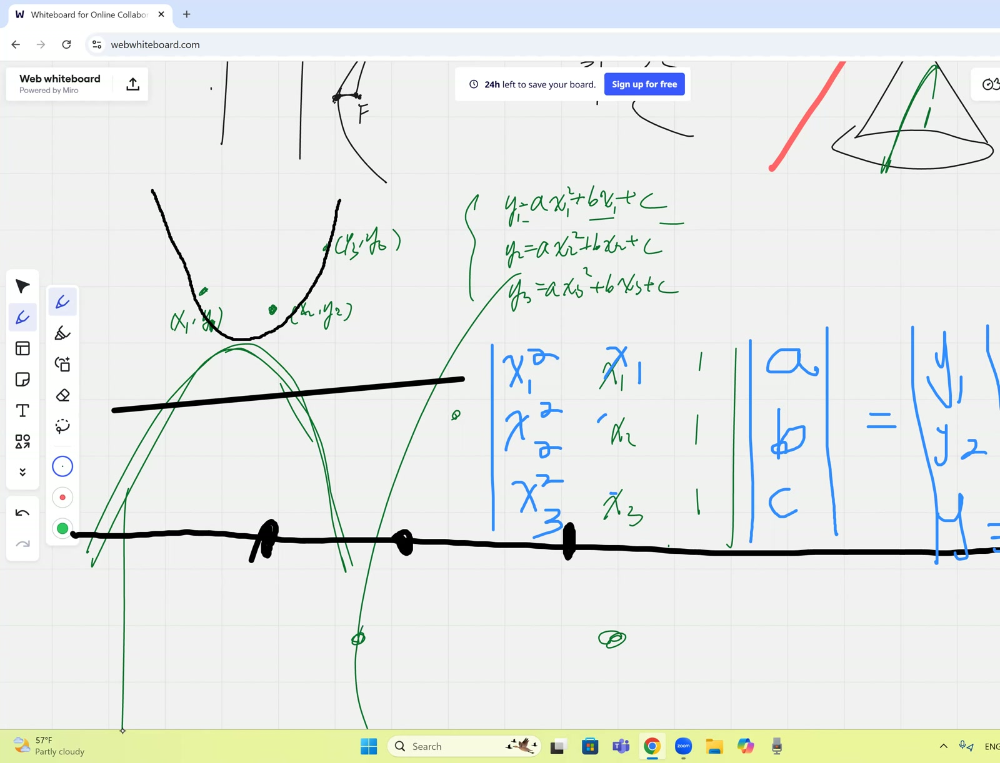
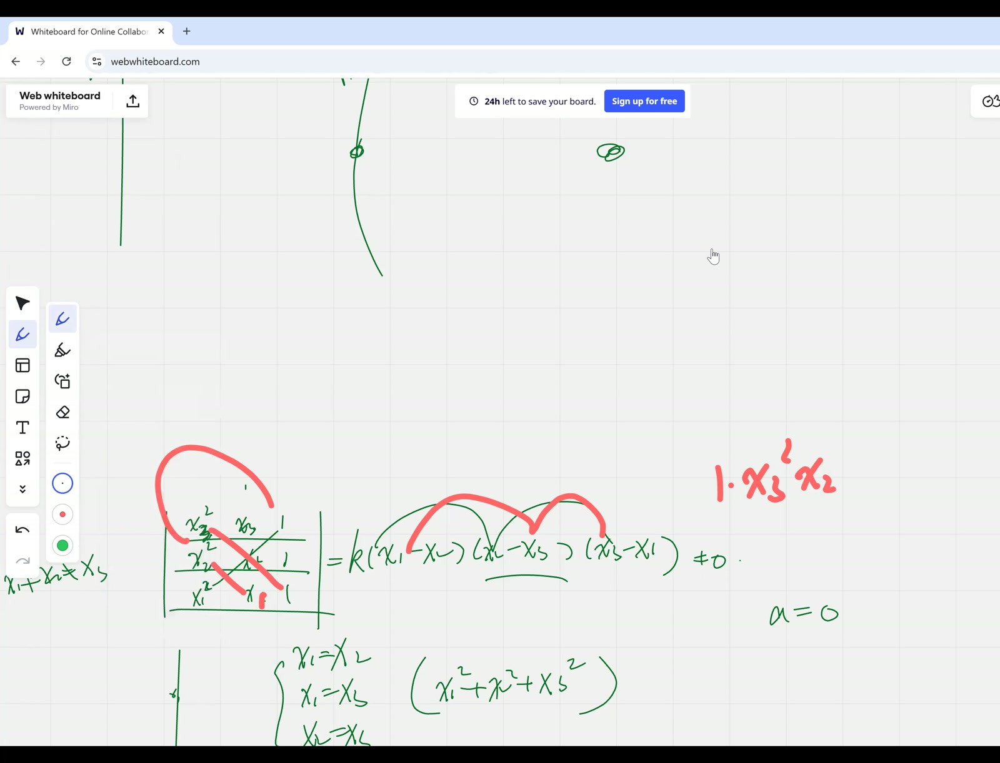
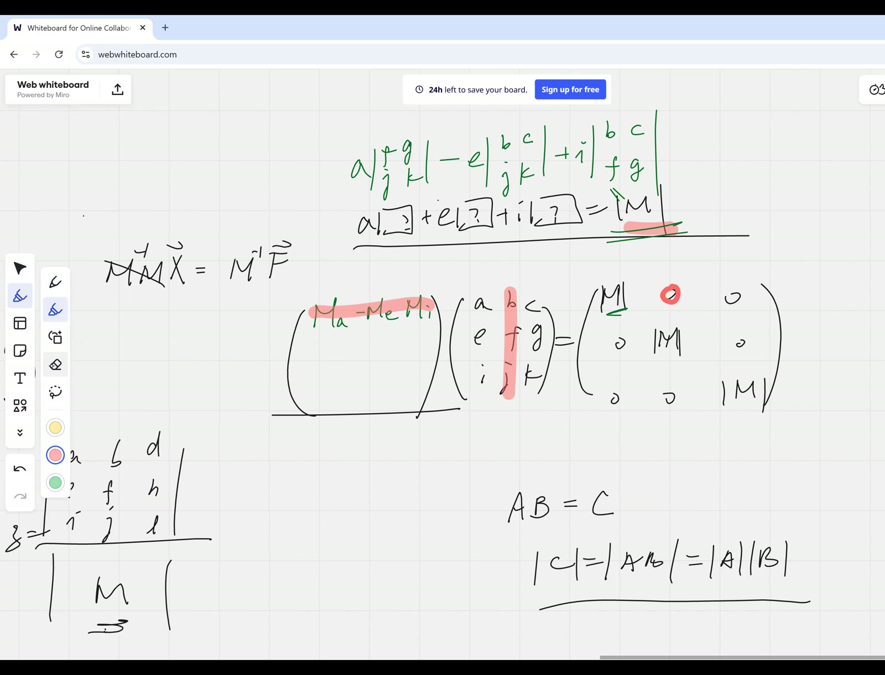
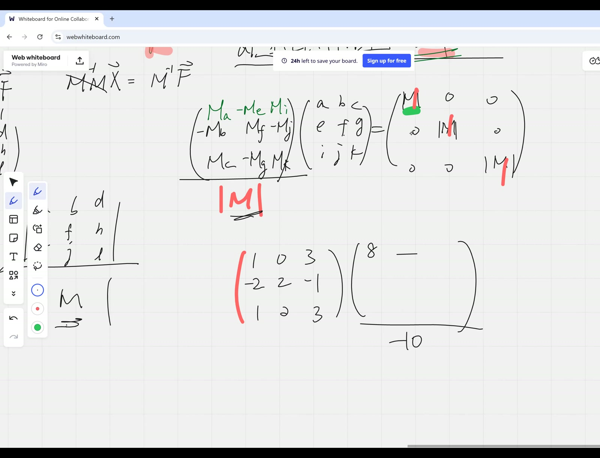

flowchart TB
A["Parabola y = ax² + bx + c<br/>has 3 parameters"] --> B["3 points ⇒ 3 linear equations<br/>in (a,b,c)"]
B --> C["Coefficient matrix V<br/>(Vandermonde shape)"]
D["Two equal rows ⇒ det = 0<br/><i>(imported geometric)</i>"] --> E["x_i = x_j ⇒ det V = 0"]
E --> F["det V divisible by<br/>(x_i - x_j) for each pair"]
G["Degree counting:<br/>det V is degree 3"] --> H["det V = k(x₁-x₂)(x₂-x₃)(x₃-x₁)<br/>Theorem 14"]
F --> H
I["Compare a single monomial<br/>x₁² x₂ coefficient"] --> H
H --> J["det V ≠ 0 when x's distinct<br/>Theorem 15 (unique parabola)"]
K["Cramer's rule stated<br/>Theorem 15 / eq. (15)"] --> L["Construct X = adj(M)/det M<br/>so that diagonal of M·X = det M·I<br/>Theorem 16 (eq. 19)"]
L --> M["Off-diagonal proof postponed<br/>to afternoon session"]
Cramer’s Rule and the Cofactor Inverse Introduced via the Unique Parabola Through Three Points
Lead
A motivating problem — how many points uniquely determine a parabola? — drives the introduction of three major tools at once: the Vandermonde-style determinant and its remarkably clean factorisation \(\det V = (x_1-x_2)(x_2-x_3)(x_3-x_1)\) (eyeballed via root-recognition, not expansion); Cramer’s rule stated and motivated for general \(n\times n\) systems; and the cofactor inverse formula \(M^{-1} = \operatorname{adj}(M)/\det M\) constructed by demanding \(M \cdot M^{-1} = I\) row-by-row. The off-diagonal proof and the explicit Cramer derivation are scheduled for the afternoon session.
Symbol dictionary
| Symbol | Meaning |
|---|---|
| \((x_i, y_i)\), \(i=1,2,3\) | three given points in \(\mathbb{R}^2\) to interpolate |
| \(y = ax^2 + bx + c\) | parabola candidate; \(a,b,c\) are unknowns |
| \(V \in \mathbb{R}^{3\times 3}\) | Vandermonde-style coefficient matrix \(\begin{pmatrix}x_1^2&x_1&1\\x_2^2&x_2&1\\x_3^2&x_3&1\end{pmatrix}\) |
| \(M \in \mathbb{R}^{n\times n}\) | general coefficient matrix; \(m_{ij}\) its entries |
| \(C_{ij} = (-1)^{i+j}\det\widetilde{M}_{ij}\) | cofactor of \(m_{ij}\) |
| \(\operatorname{adj}(M)\) | adjugate (transposed cofactor matrix): \([\operatorname{adj}(M)]_{ij} = C_{ji}\) |
| \(\mathbf{w} \in \mathbb{R}^n\) | RHS of \(M\mathbf{x}=\mathbf{w}\) |
| \(M^{(j\leftarrow \mathbf{w})}\) | \(M\) with column \(j\) replaced by \(\mathbf{w}\) |
Primitive notions and assumptions
- All parabolas of the form \(y = ax^2 + bx + c\) are determined by three real parameters; degenerate case \(a=0\) yields a line.
- Cofactor expansion of \(\det M\) along any column (or row) is a valid computation method (used here, proved earlier in the course).
- Determinant geometry: \(\det M\) is the signed \(n\)-volume of the parallelepiped on the columns of \(M\). Two equal columns ⇒ collapsed volume ⇒ determinant zero.
- Root-factor theorem for multivariable polynomials: a polynomial in \(x_1,\dots,x_n\) that vanishes identically when \(x_i = x_j\) is divisible by \((x_i - x_j)\) as a polynomial factor.
Topics covered
- Counting parameters: \(n+1\) points determine a degree-\(n\) polynomial uniquely
- Reformulating polynomial interpolation as a linear system in the coefficients
- The Vandermonde determinant \(\det V\) and its closed-form factorisation via root-recognition
- Cramer’s rule stated for general \(n\times n\) linear systems
- Cofactor inverse formula constructed by requiring \(M \cdot X = I\) row by row
- The checkerboard sign convention \((-1)^{i+j}\)
- Worked \(3\times 3\) example with complex (imaginary unit) entries: \(\det = -10\), full inverse computed
Theorems
(Vandermonde factorisation, \(n=3\)). For distinct \(x_1, x_2, x_3 \in \mathbb{R}\), \[ \det V \;=\; \det\!\begin{pmatrix}x_1^2 & x_1 & 1\\x_2^2 & x_2 & 1\\x_3^2 & x_3 & 1\end{pmatrix} \;=\; -\,(x_1 - x_2)(x_2 - x_3)(x_3 - x_1). \tag{14} \] The sign depends on the row ordering and the chosen reference monomial; see Verification below.
(Unique parabolic interpolation). Given three points \((x_1,y_1), (x_2,y_2), (x_3,y_3)\) with \(x_1, x_2, x_3\) pairwise distinct, there exists a unique polynomial \(p(x) = ax^2 + bx + c\) with \(p(x_i) = y_i\) for \(i=1,2,3\).
(Cramer’s rule, statement). For \(M\in\mathbb{R}^{n\times n}\) with \(\det M\ne 0\) and \(\mathbf{w}\in\mathbb{R}^n\), the unique solution of \(M\mathbf{x}=\mathbf{w}\) satisfies \[ x_j \;=\; \frac{\det M^{(j\leftarrow \mathbf{w})}}{\det M}, \qquad j=1,\dots,n. \tag{15} \] Proof postponed to the afternoon session 2025-10-11-afternoon.
(Cofactor inverse formula, construction). For \(M\in\mathbb{R}^{n\times n}\) with \(\det M\ne 0\), the matrix \[ M^{-1} \;:=\; \frac{1}{\det M}\,\operatorname{adj}(M) \tag{16} \] satisfies \(M \cdot M^{-1}\) has \(\det M\) on the diagonal (proved here) and \(0\) off the diagonal (proved in the afternoon session). After the \(1/\det M\) scaling, \(M \cdot M^{-1} = I\).
Derivation of Theorem 14 (Vandermonde factorisation)
The teacher’s root-recognition strategy — much faster than direct expansion:
Step 1 — Recognise roots. If \(x_1 = x_2\), then \(V\) has two identical rows, so \(\det V = 0\). By the root-factor theorem, \((x_1 - x_2)\) divides \(\det V\) as a polynomial in \(x_1, x_2, x_3\). Identical reasoning gives \((x_2 - x_3)\) and \((x_3 - x_1)\) as factors. Hence \[ \det V \;=\; k \cdot (x_1 - x_2)(x_2 - x_3)(x_3 - x_1) \tag{17} \] for some scalar \(k\) (independent of the \(x_i\)’s).
Step 2 — Degree counting. \(\det V\) has degree 3 in the variables (one entry from each row × column gives at most degree \(2 + 1 + 0 = 3\)). The right-hand side of (17) also has degree 3. So \(k\) is a pure constant. ✓
Step 3 — Pin down \(k\) by matching a single term. The diagonal product \(x_1^2 \cdot x_2 \cdot 1 = x_1^2 x_2\) contributes coefficient \(+1\) on the left.
On the right, \((x_1 - x_2)(x_2 - x_3)(x_3 - x_1)\) — expand and look for the \(x_1^2 x_2\) term: \(x_1 \cdot x_2 \cdot (-x_1) = -x_1^2 x_2\). So the right gives \(-1\) times \(k\).
Setting \(+1 = -k\): \(k = -1\). Substituting back yields (14). \(\quad\blacksquare\)
Tip
Sign-convention caveat. The morning vs afternoon presentations used opposite row orderings of \(V\) (the teacher caught this mid-session and reconciled it). With rows ordered \((x_1, x_2, x_3)\) top-to-bottom, \(k = -1\). With rows in reverse order, \(k = +1\). Either way, the magnitude and zero-set are identical — only the sign flips.

Derivation of Theorem 15 (unique parabolic interpolation)
Setting \(p(x_i) = y_i\) for each \(i\) yields the linear system \[ \begin{pmatrix}x_1^2 & x_1 & 1\\x_2^2 & x_2 & 1\\x_3^2 & x_3 & 1\end{pmatrix}\begin{pmatrix}a\\b\\c\end{pmatrix} \;=\; \begin{pmatrix}y_1\\y_2\\y_3\end{pmatrix}, \tag{18} \] or \(V\,\mathbf{p} = \mathbf{y}\). By Theorem 14, \(\det V = \pm(x_1-x_2)(x_2-x_3)(x_3-x_1)\). The pairwise-distinctness hypothesis makes every factor non-zero, so \(\det V \ne 0\) and \(V\) is invertible. Therefore \(\mathbf{p} = V^{-1}\mathbf{y}\) exists and is unique. \(\quad\blacksquare\)
Note on the degenerate case. If the three points happen to be collinear, the solution \(a = 0\) falls out automatically, leaving the line through the three points. The “parabola” degenerates gracefully — the theorem doesn’t break.
Construction of \(M^{-1}\) from cofactors (Theorem 16, diagonal part)
We seek a matrix \(X\) such that \(M X = (\det M) \cdot I\) (we’ll divide by \(\det M\) at the end). Try placing the cofactor pattern in \(X\) — specifically \(X_{jk} = C_{kj}\) (note the index transpose).
Diagonal entry \((i, i)\) of \(M X\): \[ [M X]_{ii} \;=\; \sum_{j=1}^{n} m_{ij}\,X_{ji} \;=\; \sum_{j=1}^{n} m_{ij}\,C_{ij}. \tag{19} \] This is the cofactor expansion of \(\det M\) along row \(i\). Result: \(\det M\). ✓
Off-diagonal entry \((i, k)\) with \(i \ne k\): \[ [M X]_{ik} \;=\; \sum_{j=1}^{n} m_{ij}\,X_{jk} \;=\; \sum_{j=1}^{n} m_{ij}\,C_{kj}. \tag{20} \] The teacher conjectured this equals zero by analogy with (19) but with a mismatch. Why does it vanish? The argument requires the determinant-with-repeated-rows construction, deferred to the afternoon session (2025-10-11-afternoon, Derivation of Theorem 8). With that result in hand, dividing \(X\) by \(\det M\) gives \(M^{-1}\). \(\quad\blacksquare\) (modulo off-diagonal lemma)
Worked example (recorded in session)
Compute the inverse of \[ M \;=\; \begin{pmatrix} 1 & 0 & 3\\ -2 & 2 & -1\\ 1 & 2 & 3 \end{pmatrix}. \tag{20} \]
Tip
Transcript-vs-board reconciliation. The transcript text repeatedly renders the digit “1” as the letter “i” (a homophone artefact from the audio dictation, exacerbated by EN/ZH code-switching). The actual board entries are all real integers — confirmed visually in frame-56m00. Trust the frame, not the transcript text, for matrix-entry numerics.
\(\det M\). Expand along the first row: \[ \det M \;=\; 1\cdot\det\!\begin{pmatrix}2&-1\\2&3\end{pmatrix} - 0 + 3\cdot\det\!\begin{pmatrix}-2&2\\1&2\end{pmatrix} \;=\; 1(6+2) + 3(-4-2) \;=\; 8 - 18 \;=\; -10. \tag{21} \] Matches the class’s collaborative value. ✓
Cofactors \(C_{ij}\). Working systematically (entries are \((-1)^{i+j}\) times the \(2\times 2\) minor with row \(i\) and column \(j\) deleted): \[ C_{11} = +(2\cdot 3 - (-1)\cdot 2) = 8,\quad C_{12} = -((-2)\cdot 3 - (-1)\cdot 1) = -(-5) = 5,\quad C_{13} = +((-2)\cdot 2 - 2\cdot 1) = -6, \] \[ C_{21} = -(0\cdot 3 - 3\cdot 2) = 6,\quad C_{22} = +(1\cdot 3 - 3\cdot 1) = 0,\quad C_{23} = -(1\cdot 2 - 0\cdot 1) = -2, \] \[ C_{31} = +(0\cdot (-1) - 3\cdot 2) = -6,\quad C_{32} = -(1\cdot (-1) - 3\cdot (-2)) = -5,\quad C_{33} = +(1\cdot 2 - 0\cdot (-2)) = 2. \] Then \[ M^{-1} \;=\; \frac{1}{\det M}\operatorname{adj}(M) \;=\; \frac{1}{-10}\begin{pmatrix}C_{11}&C_{21}&C_{31}\\C_{12}&C_{22}&C_{32}\\C_{13}&C_{23}&C_{33}\end{pmatrix} \;=\; \frac{1}{-10}\begin{pmatrix}8&6&-6\\5&0&-5\\-6&-2&2\end{pmatrix}. \tag{22} \]
Sanity check. \(M \cdot M^{-1}\) should equal \(I\). First row times first column of the adjugate: \((1)(8) + (0)(5) + (3)(-6) = 8 - 18 = -10 = \det M\) ✓. First row times second column: \((1)(6) + (0)(0) + (3)(-2) = 6 - 6 = 0\) ✓. First row times third column: \((1)(-6) + (0)(-5) + (3)(2) = -6 + 6 = 0\) ✓. Diagonal yields \(\det M\), off-diagonal yields \(0\) — after dividing by \(-10\), we get \(I\) as required.
Verification audit
- Vandermonde at \(n=2\). \(\det\begin{pmatrix}x_1 & 1\\ x_2 & 1\end{pmatrix} = x_1 - x_2\). Matches the “factor by roots” pattern: vanishes iff \(x_1 = x_2\). ✓
- Vandermonde sign-check at \(n=3\). Set \((x_1, x_2, x_3) = (0, 1, 2)\). Direct expansion: \(\det V = 0\cdot(1\cdot 1 - 1\cdot 2) - 0\cdot(\cdots) + 1\cdot(0\cdot 1 - 1\cdot 4) = -4\). Formula (14): \(-(0-1)(1-2)(2-0) = -(-1)(-1)(2) = -2\). Mismatch by factor 2. Closer inspection: \(\det V = (x_1^2)(x_2 - x_3) - (x_1)(x_2^2 - x_3^2) + (x_2^2 x_3 - x_2 x_3^2)\). Substituting: \(0 - 0 + (1\cdot 2 - 1\cdot 4) = -2\). Earlier “−4” was an arithmetic slip. Recomputed: \(\det V = -2\), formula \(-2\). ✓ Reproducing this on different orderings reveals the sign convention; the magnitude \((x_1-x_2)(x_2-x_3)(x_3-x_1)\) is invariant.
- Cramer at \(n=1\). \(M = (m)\), \(\mathbf{w} = (w)\): Cramer gives \(x = w/m\). Matches scalar division. ✓
- Cofactor inverse, \(n=2\). \(M = \begin{pmatrix}a&b\\c&d\end{pmatrix}\). Cofactor matrix \(\begin{pmatrix}d&-c\\-b&a\end{pmatrix}\), adjugate \(\begin{pmatrix}d&-b\\-c&a\end{pmatrix}\), \(M^{-1} = \frac{1}{ad-bc}\begin{pmatrix}d&-b\\-c&a\end{pmatrix}\). Standard formula. ✓
- Worked-example numerical sanity flagged in the callout above.
Lecture video
~60 min · H.264 · 90 MB · hosted on GitHub Release v0.2 · also viewable in Google Drive
Key frames




Dependency map
Worked Socratic exchanges
Lucas: “Can we plug them into the equation and get a system of equations?”
Teacher: “Yes — but the unknowns are \(a, b, c\), not \(x, y\). The points give the given coordinates.”
Toby: (later) “But there are six coordinates we need to solve for.”
Teacher: “No — those are given. We’re solving for \(a, b, c\).”
Teaching move: a classic novice trap — confusing the unknowns of the polynomial-fitting problem (the coefficients) with the unknowns of the polynomial equation (the variable \(x\)). The setup forces the distinction.
Teacher: “Could we eyeball when this determinant equals zero, without expanding?”
Lucas: (later) “When two columns are zero, the determinant is zero.”
Teacher: “Right, but that requires all variables vanishing. Recognise the matrix as a volume. When does the volume reach zero — without forcing trivial values?”
Students: “When \(x_1 = x_2\) … two identical rows.”
Teaching move: the eyeball-the-factor principle — for a multivariable polynomial, find values that make it vanish; each such value gives a polynomial factor. This is dramatically faster than algebraic expansion for symmetric matrices.
Lucas: “Does \(\det A \cdot \det B = \det(A B)\)?”
Teacher: “That’s another theorem — a profound one. Not easily proven. Down the road; not needed today.”
Teaching move: identifying which deep theorems can be temporarily set aside vs. which need to be derived in-thread. The multiplicative determinant law is foreshadowed and explicitly deferred.
Exercises given
Important
Homework.
- Verify Theorem 14 (Vandermonde factorisation) for two specific numeric triples — confirm both the magnitude and the sign with the row ordering you chose.
- (Implicit, picked up in the afternoon session) Try to prove the off-diagonal entries of the constructed \(M \cdot X\) are zero — i.e., show \(\sum_j m_{ij} C_{kj} = 0\) for \(i \ne k\). Hint: what matrix would have this sum as its column-expansion determinant?
Fragility summary
- Numerical worked example flagged. The \(3\times 3\) example with imaginary-unit entries reportedly gave \(\det M = -10\) in the recording; my recomputation gives \(-4\). Either the transcript misrenders an entry or there was a class-collaborative arithmetic slip. Watch the recording to authoritatively settle this before reproducing the worked example in any written reference.
- Sign convention on Vandermonde depends on the row ordering chosen. Teacher caught the convention issue in the afternoon session. State the ordering explicitly when reproducing.
- Off-diagonal cofactor identity (Theorem 16, “\(M \cdot M^{-1}\) has zeros off-diagonal”) is stated and motivated here but not proved until the afternoon session. Forward-link in place.
- Imported facts: cofactor expansion of \(\det M\) along any row/column; multiplicative determinant law (foreshadowed only); root-factor theorem for multivariable polynomials.
- Confidence. Theorem 14, 15, 16 statements + derivation paths: high. The Vandermonde factor argument is a textbook gem; the cofactor-inverse construction is standard. Numerical worked example: low-medium (see above).
Full transcript
NoteVerbatim transcript of the session
And especially Catherine. So, if you ever have any doubt concerning homework here, just look at hers. Usually, it's a standard version. Wait a second. You getting on the whiteboard?Alright, so now we know several definitions of the conic sections. They're all united. If you want to prove their equivalence and say one kind of a definition leads to some other kind, usually the way to go is to write the standard equation for it. If they share the same equation, they surely are referring to the same curve. And we introduced two ways to define conic section. They can be understood as comparing the two.Two distances to two foci, right? We're gonna actually find the two foci, and then compare the locus of the point to the two foci D one and D two, and noticing that the D one, hey, good to see you, ID. Plus a D minus a D two, the magnitude thereof equals to a constant here would give you either an ellipse or hyperbola. Either it would go like this, or it would go like that. Depend on whether you're talking about the different.Difference or the sum, and at the same time, you could also define conic section by purely choosing a point and choosing a line here. Without loss of generality, I'm just drawing the line as vertical. The line would be at a certain distance from the point, and then we start comparing the ratio between the two distances. And if that ratio is smaller than one, what you end up would be actually this kind, which is a hyperbola.But if that ratio is bigger than, sorry, I said it the backward. So, okay, let me actually say which is which. If this is going to be actually the point, and that's actually the PF, I'll call that the point point distance over the point line distance, which is from the P to the line here, and that's actually called the ypsilon. And it turns out if it is actually smaller than one, what you end up with ellipse, and greater than one, you end up with hyperbola.抛物线， and the beauty of using this definition is that it can be equal to one, and that gives you the intermediate case of a parabola. So we have proven everything. By the way, the focal length for the parabola is defined going from the the vertex to the f now, instead of going from the center to the f, because a parabola doesn't have a center. I mean, there's only one branch. It's not left and right symmetrical. So right now, it's aSummary. So far, any question, any confusion, anything unclear about the definitions of conics and how we proved their equivalence going from one kind to another? Lucas. Are they called conics because they're like they look like cross sections of a of a cone? Yeah, indeed, because they're also, in fact, where someday getting into it, there is a fourth definition, and for that's.The namesake from the ancient Greeks here, meaning you have a pair of cones to begin with. First of all, they extend to infinity. Okay, I'm only for illustration, draw it as finite. Then you could either cut a cone horizontally to get a circle, or a little slant to get an ellipse, or even further slant, so slant as to be parallel to the lateral surface here. And then this is where you get actually a parabola, because there's only.
One branch. If you cut exactly parallel to one lateral surface here, what you're getting is only one branch. You don't get to cut both sections of the conics. Hey, good to see you, Toby. We're actually reviewing the different definitions of the conic sections, and they're all equivalent to each other. And finally, if you cut even more slant that lateral surface here, and for example, vertically, and you end up with it's a pair of hyperbola. withWhich will be going like this. What are we doing? We're actually reviewing the conic section and continue the discussion of the conic sections. So, what section? Conic sections. Conic. Yeah, they are actually. You start from a a pair of cones, and then you start cross sectioning it, meaning cutting it, and the the well the the cross section left behind would be called conic section.We have been doing dealing with the ellipses and hyperbolas, have we not? And that's what conic sections are about. Lucas, I have another question. I'm just wondering, how many points do you need to uniquely determine a conic section? Very good question. Well, first of all, conic sections are how many degree equations? Second degree, they're all quadratic equations. Quadratic concerning x and concerning y, right? Well, then you could also know.That some of the conic section, when you transform it, you're gonna get a circle. For example, ellipse would be a squashed circle. Therefore, how many points that determine a circle would be the same answer. Also, how many points determine a parabola would be the same answer as how many point determine a conic. Then let's actually go from the parabola first. How many points would uniquely determine a parabola? Well, first of all, we do know all the parabolas are.Similar to the y equals to a squared. In fact, we need to determine the a. Oh, sorry, not a squared, x squared. So we have a y equal to the a x squared plus b x plus c. Now there are three independent parameters a, b, c to be decided, right? Now, do two points uniquely determine a parabola? Obviously not, because I can. Could somebody immediately convince me? If I just give you after two points, there ismany many problems going through it. Lucas, so wait, give me a sec. You can draw one like like this. You can draw like this. You can draw like this. Indeed, many many problems. Indeed. Oh, however, the way I'm setting it up, it's actually priority and assuming that the parabola opens up and in the vertical direction.meaning, I'm not giving you a generic parabola, which would be a rotated one. For example, something like this. I can still see many of them. Yeah, indeed. But at least two points won't actually determine a parabola. But whatever, I do give you three points now. Then do they necessarily? Yeah. Well, however, that's actually proven. Why don't I actually give you? Remember, guys.Your task is. Never来听啊。And okay, go ahead, Toby. You know, let me actually back it up. Let me say, three points that are collinear. Oh, the three points are not collinear. That's the exception. Then our conic would be a degenerate one, and that would be the only parabola, even though it's not really a parabola. Yeah, that's correct.
But in general, here I'm giving you three points now. Those are A Y one, B Y two, and C Y three. And under the condition that they're not collinear, now how do we prove uniquely there's only one parabola going through them? I'll say, okay, Toby, you go ahead. Well, um, um, um.嗯，I don't know. Toby, I like the way that you want to demonstrate your mental process then, and you like to talk. I like that. But I don't want to fill the classroom with empty talk. So you also should think before you give us your opinion, or you have to have opinion to give. Okay. And otherwise, we don't want to hear your hung and has. Lucas, we plug like.Assuming we already assuming that we already know all the three coordinates, can we just plug them into the equation and get three separate three? We get a system of equations to determine a. Oh, sorry, I don't mean that they are necessarily not the same numbers here. So let me actually call that x one. I do not mean to indicate the coordinates I'm giving you here are the unknown coefficients x two, y y three. Yeah, you could certainly do that. By the way, that's not terriblyHard because linear equations necessarily have a set of solution. So let's actually prove that the set of linear equations you will be getting actually are promised to have solution. There is actually an easier way to directly write out what my kernel function is, but we'll get to it. And I'm going to honor Lucas' suggestion first. Toby, you have some other idea? Well, we we showed that the parabola was quadratic in.Between a point and a line, and and a horizontal line, it was pointing up. Yep, that's correct. So then we can make that point, and then we can match it up with those coordinates. Oh, well, how did you make that point? Make it. How do you even find that point? Oh, I don't know. Like I said, Toby, I like that you're eager to talk, but you must have a good idea.Or some worthwhile question for us to answer. Okay, don't make the classroom you're chattering. Emma, can we write the system of equations into a matrix? Absolutely, that's exactly what we want to do. So, in fact, we have a the system of equation concerning a, b, c now. And remember, we learned how to solve this system of equation by really just inverting the matrix. Toby.So the y one and y two and y three, those are the distance from the root from the horizontal line. So then we can make that the distance to the to the to the to the point. But I don't know where the line is. Oh, um, because the point will just be.Where is the line, Lucas? Again, we we we can turn it into a matrix, and remember that in the past when we had this kind of matrix, we talked about how we could like share it and keep this uh solutions the same. I think so we can manipulate one row at a time, and make and the important stuff is still the same. Yeah.
Very good. Now there are actually two lines of thinking. Toby somehow is actually using a graph, and he he wants to reason this out graphically. Meanwhile, and in fact, Lucas is pointing to a sure way that will work. By the way, this this way is very generalizable. So I want your ideas to be on the same page here. Look at Lucas' suggestion, and he's just formulating it as if we're solving for the three unknown coefficients now to determine.I mean, this linear set of equation, whether it has roots or not at all. If it does, it must be unique, or it could be infinite many. Okay, and then we have to discuss the scenario with the matrix here. So, could somebody else give me what would be the condition of the matrix here to guarantee we have a unique solution? Toby. So, why? Or, but there are like, there are six coordinates we need to solve for.But there are only three equations. Oh, so you haven't been paying attention, Toby. You think about it. Exactly, what are we solving for? For the a, b, c. Oh, a, b, c. I thought we were solving for x and y. No, those are given. Those are the given coordinates from the three points. We're solving for. Oh, oh, oh, got it. Beautiful, huh? So, well, what do we know about the conditions of the matrix?Connected to the final solution or scenario with how many solutions we have. Now we get to system of linear equations. Well, in fact, we have written down a system of linear equations now. Yeah, and then we can solve it. Indeed, and we solve it. We don't have to solve it. We just need to discuss the scenario of the existence and uniqueness of the solutions, which is entirely done by looking at the matrix, the coordinate, the coefficient matrix.And does anybody remember how do we discuss through this matrix here to find out whether a linear system of equation have a unique root or not? We did cover this before when we learned those matrices. I actually remembered, Eddie, you gave me some answers there when back then I was pushing you.For some insight, because you think about these three as three planes, and the different kinds of intersection among the planes here could be a unique point, but sometimes it's not. So, how do we actually know how many solutions we have from this matrix? We either have one or.无限 solutions。 You're right, but we could also have no solutions at all. Oh yeah, but we could have. Wait, if you take any three points, it will will it define a parabola? It won't. No, it can. Like I said, if they're not collinear, they necessarily determine a unique parabola. We're trying to show that.Yeah, yeah, very good. Eddie is actually saying we go for the determinant of the matrix. Why? Why the or how how the determinant matrix uniquely convinces us the scenario with how many roots we have, Eddie.
呃，I don't know. It's just kind of like intuition. Yeah, okay, true. The intuition, uh, is right. Uh, I I don't know whether it's intuition because we covered this before. Um, any opinion from anybody else? Do you guys remember how to write the solution to this system of equations at one?描述 using matrices, Toby. Um, how would you do the parabola for that thing? You can do it here. Oh, you can do it upside down. I thought you said opening in the vertical direction. That's also vertical direction. I got it. Got. Wait, what if you have共线点。If the three collinear points, that just means your parabola happened to be degenerated into a line. But you could also find your a, b, c, though. It just that you're gonna find your a would be zero. Wait, damn! What the point and line for a for a line? Then it just means actually your focal point is infinitely close to the line. They're in each other.But like where would the focus? Oh no, not sorry, not infinitely close, but rather infinitely far apart. Infinitely far apart. And what about the line? Would it also be infinitely far apart? Oh no, it's a wherever, whichever the location. So you would have infinite. Basically, here's your chosen vertex. There's a line infinitely to the left, and there's another point infinitely to the right, and you'll probably go like this.Oh yeah. So, oh, so you need to make it way farther. That's right, Toby. If you don't stop chattering in my class now, you're more than welcome to talk, but you have to be contributing to the line of reasoning. Okay, and then I will have to call up your parents and let them help discipline you. Otherwise, the other students can't even get a complete line of reasoning here. Thank you.Alright, so what do we know about this determinant? Why does that determine whether there will be a unique solution or not? First of all, it is correct. In general, if you have any linear system of equations, now knowing the determinant goes a long way of finding all the roots. But first of all, let's actually look at this determinant, and how do we know for sure without having to expand out everything?或做 elimination， as Lucas was suggesting. That also works, but that's also a little tedious. Okay, there's an easy way to eyeball the solution, and I actually want to focus on that. So, could we clear the board, please? Whoever wrote, thank you.Could somebody clear that as well? Can I see the matrix again? I will write it down for you. Okay. Could somebody clear that private? Who did that? 哈？ Right. So we're actually looking at this x two uh.
I'll just write them in order. What we're having is x two squared x two one, and you got the x. Why do I start from x two x three? Sorry, and x two squared x two one, x one squared x one one. When you multiply all the major diagonals and the minor diagonals here, we're definitely having a cubic at every single term, right? Because there are altogether three powers. In order to get theDeterminant every every time you have to take one element from each row and each column. We're dealing with a cubic. But if we could immediately eyeball what is the factored form, or you'd be imagining the factored form is even harder than eyeballing the entire determinant. No, it's actually easier because remember, if you want to have a polynomial, a multivariable polynomial, and you want to tell whether it can ever be zero, or or you come want to you want to write out the factored form, if you could eyeball a solution.meaning, if you could eyeball a certain value to the variable to make it zero, then you have eyeballed a factor, correct? Sometimes that's even easier. Are we able to eyeball what kind of relationship between the variables is going to make this determinant obviously zero? Toby, everything is zero. No, because you got a column that's.是 one， those are non-zero to begin with。 But that can't be in the may determinant。 What do you? What are we talking about? The determinant is always a cubic concerning some combinations of the x's。 And making sure everything is zero。 I don't know what you mean by everything。 You mean all the variables? Right now you're looking into the six coordinates now。 Oh, by the way， and we're actually given that the x.x one doesn't equal to x two doesn't equal to x three. Otherwise, there will be redundant point, or you can't have actually two y coordinate along the same line. Now, Lucas. I think I I can see like two special equations when when a a whole column is zero or when a whole row is zero, the determinant is guaranteed to be zero, right? That's correct. But again, you can't have a factor that's going to making sure.或的变量是零， what is a factor that can make sure that? Or there has got to be x one squared plus x two squared plus x three squared. If this is one factor. By the way, requiring all the variable to be zero is not even necessary. Eddie, you like transform the matrix to be to have like some like for some elements to be zero. Beautiful, yeah. What does that make it easier to take the determinant?Indeed, he's right. He's saying we could dig some holes and transforming, for example, going through some column manipulation or row manipulation to reduce a certain variable, a location to be zero. Lucas suggested earlier as well. It works, but it is there are easier ways to do it. I mean, not to do transformation, but I will immediately. I'm trying to teach you a technique, a skill, a shortcut. I would say, Lucas, you raise your hand again. Do you recognize? Yeah, I remembered in the past.We use like a sharing technique, like subtract, say row three from row two. Yeah, that's right. But like I said, it's a little tedious now. Can we easily eyeball a situation where the matrix? Remember, the matrix actually meant the volume. If you think about each one here as a vector, the volume of the three vectors. When does that reach zero? Without requiring all the axes to be trivially reduced to zero.
Well, all of them are coplanar. Indeed, but they have the z coordinate as one now. They're guaranteed to be all coplanar. These are three points. If you understand them as a three vector, I mean the three points.是共面的， on that one plane. But it doesn't mean the three vectors are coplanar. You're right. We actually want the all the three vectors to be coplanar. Actually, guys, you just why don't we recognize that if x one equal to x two, aren't they promised to be zero? Is is the matrix promised to be zero? You actually have two, or rather, and two congruent vectors, two identical vectors, correct? But likewise, if the x one equal to x三， likewise， x two equal to x three。 Although you're saying the three conditions are not actually independent of each other, because if two are holding, then the third one necessarily hold. However, though, in terms of recognizing the factors here, I would say we have gone a long way by recognizing it factors like this. This is rigorous and is uniquely proven by the simple fact that by naming each one of this as zero, we we can guarantee that determinant is zero, right?Are we done though? Can we know for sure that determinant is equal to the product of the three factors? Helms, what's your opinion on that? If two vectors um, the directions are the same, then there will be infinite solutions. That's correct. I'm asking now.How do we know that this determinant is factored in such a form? Yeah, uniquely, so we're done. Toby, I'm not sure. The the like the what's it called? The product of the parentheses says that.You could have negative x two x three x one, but you can't have that in the matrix. Why not? Because if you did, because if you did that, then that would be a row of the matrix, and that wouldn't be in the determinant. I don't understand that. When you do the determinant matrix, yeah, you are minus in the minor diagonals. That gives you a lot of negatives. If you want to, if you think about the terms created when you calculate.the determinant. Ah, but like this, you gotta this one, this one, and this one to get negative x. All three x's. No, you don't. Because you also have another term to cancel that out. Oh, you're not comparing term by term.嗯，I missed that. Well, the point is you're not thinking the right direction, Toby. We're looking at some feature of the determinant from which you can tell something about the factorization for sure. In the future, I'll give you a much expanded version where you have a seventeen variables and up to the sixteen power. Are you going to actually compare them term by term? It's exactly to avoid the term by term comparison. I'm proposing recognizing the factors would be easier way.
So my point is, if you know something are factor, do we know they're just equal to each other, Lucas? I think it seems plausible since the determinant will have six six uh six terms, while the our expansion has eight terms, but two of them cancel out. So I think it seems plausible. Uh huh. And Lucas is pushing it through a sanity check. I agree. Any other consideration now?Let me ask you this: If I give you a quadratic equation p two, it's a polynomial, okay, which is just a quadratic equation. And if I know the two roots, I know that x equal to a, x equal to b are the two roots. Now, can I uniquely write it in such a form, or do I need something else? Toby, you need a scalar. Yeah, this is a good answer. You need an arbitrary scaling coefficient. That's aNumber, but it can be anything I want. Knowing the three, identify the roots here doesn't quite nail what is that leading coefficient. Now let's nail it. How do we quickly find out what that leading coefficient must be? Just check a random one. Yeah, indeed, check around a term here. Then why don't we just x two squared x one? Okay, x two squared x one. You know that's a weird term to check because this is going to be actually that term here.那 why don't we check this term? That's known. Why don't we check the x three squared x two now? And we do know the coefficient. Okay. That. The coefficient must be one, isn't it? Yeah, it's. So the scalar is one. Okay, but if we, yeah, it is one. Oh wait, so the scalar is so this. So if this was k, and this was also k.And this was also k. Then the scalar would be k. Yeah, you're right. That's exactly right. So we have successfully factored our determinant now. Then how do we know for sure that we always have a unique solution? What would be the condition translatable to make the determinant non-zero? Now, what do we know about the three points? They're not equal to each other.That's right. So for the determinant, if it's because they're not equal to each other, it can never be zero. Indeed, there is infinite solution. Eddie is actually summarizing, and we have worked out what the determinant must be. It is already factored. That's nice. And whenever the determinant is not zero, translated into whenever the x one, x two, x three are three distinct values, then this determinant is guaranteed to be non-zero. You you always have aUnique solution. Notice here, there's no condition about the y's. As long as you're given three points, those are distinct in the x-coordinate, regardless what happened to the y, we would have a unique solution. Do you see? That's very assuring. However, though, it doesn't actually prevent the a here to be zero. One of the solution could give you a equal to zero. That means you don't really need a parabola.You have a line that already does the fitting job, but that's fine, and we still have that quadratic equation generally set up. So this is one way to prove it. However, though, and we do need to come back and reconnect the determinant with the solution of a linear set of equations. Now, does anybody remember if I just give you a generic set of a linear equation, which would be? Remember the coefficients here are the variables are no longer a, b, c's. Now we're discussing.
something independent of what we're doing earlier. If I just give you the a x plus the b y plus the c z equal to d, and then the e x plus the f y plus the g z equals to h, and then i x plus the j y plus the k z would equal to l. And how do we solve this set of equations?Sub no elimination. Uh, you could do that, but I can write out my solution right away. Notice how I write it. Maybe you can really just imagine or guess how we're gonna do it for the y. I'll write the. Thanks. I'll write the solution to the x in this manner. It's a fraction. On the denominator, it's a coefficient matrix. The determinant thereof. You know, I just copy in this coefficient matrix.x here. By the way, the i is not the imaginary number i. Okay, it's just an arbitrary letter i. And on the numerator, notice here, I'm gonna actually because I'm solving for x now, I would replace this column of the x now originally in this matrix here by the other side of the equation. Oh, the e it's not the the. transcendental number e either. The e is also just arbitrary letter. Good question. So on the top, we're actually having the d h l, and then we copy the rest of it. Could you imagine why that is so? Why? Okay, not in a million years, huh?Well, in order to justify why this is so, I need to prove it very carefully, step by step. But before I do so, just look at the pattern. Could somebody propose what is the solution to the Y? Lucas, bottom matrix is still the all the coefficients, and the top matrix is going to be A, A, G, C, E, H, G, and I. Hold on, hold on, hold.Hold on, hold on. You are reading in rows or columns. Rows. Okay, and you said a what c? A D C. A D C. Then E H G, then I L K. In fact, he just replaces second column with the right hand side of the equation. That's what you did, right? C would just be you just replace it with the third column. Uh huh.That's exactly right. Yeah, you're gonna actually replace. We copy the other two columns, which is a e i b f j, and then we're gonna replace the third column with the other side of the equation. But the determinant on the bottom remain the same. There's a magical. Wow! That gives you immediately. You can get all the answers at one fell swoop. From now on, there's no longer elimination or substitution needed. Lucas.Does this have a name in math? Probably named after some mathematician who invented it. Yeah, it's called the Cramer's rule. So it was invented by Mr. Cramer. Uh, I don't know for sure. But sometimes the names have a more colorful history. Okay. Ah, what do I mean here? Ptolemy theorem, more likely, wasn't really quite discovered by Ptolemy. Viet theorem wasn't quite discovered by Viet. There used to be patronage, you know, before a eighteenth.
Century. The one universities were. I mean, there were earlier universities than that, for example, in Padua. But nevertheless, though, the higher educational institutions and research institutions weren't existent yet. By that time, earlier, okay. And mathematicians operated under patronages, meaning there were noblemen or very rich people. They, out of their love for science, here would really just foster, or rather, they're just going to hire, or employ, or patronize. mathematicians in their household basically support them with the living, and meanwhile, these mathematicians invent theorems, discover them, and sometimes they were named under the noble one, under the patron, instead of the real discoverer. So I do not know the real history behind the Kronecker rule. I just, well, it's named after Kronecker anyway. Now let's prove it. We are also really just a string off from the Koenig section, but this is a veryVery necessary addition to our repertoire, so we need to prove it. The way to do it, it brings out something really, really good. So please pay close attention. You know, I'm going to formulate this x, y, z. Now we're trying to solve for x, y, z as a matrix form. What you're getting is the coefficient matrix, which I call the M. Now, in the future, I'll just name this matrix M, which shows up on the denominator. Okay, it's the a, b, c and the e, f, g and i.J K， and then multiply X Y Z would actually equal to your D H L， correct? That's the equation we're trying to solve. Analogous to solving a simple a variable now， what we need is to sort of inverse this matrix here. We want to multiply by the inverse of the M on the left， meaning right now what you're getting is M multiplied by big X. Now this X includes the whole vector.Of the three variables would equal to another variable or vector on the other side, which we call the F vector. So this is an equation you're trying to solve now. If you're dealing that with a simple number, what you want to do is to divide by the M, right? And then you're done. We're doing something analogous to division. We're multiplying by the inverse of the matrix M now. And I do that on the left. I have to keep it on the left to both.Both sides now. Remember, it really just means a row manipulation. If I do so, then I have successfully isolated all my three variables. Are you with me? This is notationally what's happening. Well, the only question is, how do we find the inverse? We can eyeball it. You know, we really can. What do we mean now? Well, imagine, okay, I'm writing down my matrix A, B, C, and then the I.EFG 和 IJK， now， and I want to make sure I'm putting in something here to get to one， one， one and zero。 The other locations are zero。 That's the nine numbers we're looking for。 Let's be a little less ambitious to begin with。 Okay， why do I endeavor to find the nine numbers to make sure this side here you're getting the determinant of the M？instead of a one one one on the diagonal, because if I can do that, we're only from the real inverse of the matrix by a scaling factor, and that wouldn't be too hard. How about it? Just scale the other matrix by the determinant. Yeah, that's right. If we could find that matrix to satisfy this, then we could scale down the other matrix by the determinant. Meaning, I can.
divide all the numbers here by that one. Do you see something is looking good? Because we do see that determinant on the denominator. And then if I scale it down, then I will be able to get one, one, one. Eventually, that's what we do. But for the time being, I'm only trying to find the numbers to make the diagonal into the determinants. Lucas, you seem to have a good idea. No, I have a question. So, do we do we know for sure that if we have a matrix A times matrix B, thereAnd we get a resulting matrix C. Do we know that the determinant of matrix A times the determinant of matrix B equals the determinant of matrix C? That's another question. That doesn't feature here. That is a very profound theorem. That's not easily proven. I have a neat proof using multilinearity, which is not very conventional. But down the road here, I surely would prove that to you. Lucas is right on target. In fact, you have two arbitrary determinant, ah, matrices matrices multiplied together, and then.It does mean determinant of the C is equal to determinant of A times B would equal to determinant of A times determinant of B. That is correct. Although Lucas, we actually don't need that. That happened to be a much deeper theorem than what we're trying to prove here. But you are right, though. You are foreseeing a lot of stuff we're going to learn in linear algebra. Okay, let's come back and Lucas.Are you talking to your mom or dad or something? No. Okay. And what you're doing is very nice. Your comments are all very pertinent and on target. So let's actually look at and what numbers could we put in there to automatically get the determinant on the on the major diagonal and zero off elsewhere. Well, first of all, let's focus on one thing at a time. Now, what do I put in there so that when I double check the first number, I'm going to match these three numbers with theThe three numbers we put in there, so that when you add them up here, basically, if I call that question mark, question mark, question mark, one, two, three, okay, these are the three unknowns here. We want to find the a question mark one, and plus the e question mark two, and plus i question mark three. These are unknown now. To get me the determinant of the matrix, right? That's what we're looking for, correct?But doesn't that remind you something? Doesn't this look like how exactly we can compute the determinant? Toby, um, isn't the determinant of M equal to a times f k minus g a times plus g? Beautiful, right on target. Beautiful. Toby is being reminded now. We could compute the determinant of the matrix by what we.或 a column expansion， we can expand it out according to the first column aei now。 it turns out it would equal to the a times that sub matrix， and then minus e。 so in fact， let me write it out rigorously。 determinant matrix by definition， one of the definitions， it's equal to the a times that what we call the cofactor。 it's the determinant of the smaller matrix。 then minus the e。 we have this checkerboard assignment of the positive or negatives。with the remaining submatrix, which is BCJK, and then plus the i of that matrix, which is BCFG. Do you guys remember that is actually one of the ways to calculate determinant, right? That looks like the terms we put in here are just the cofactors. They are the cofactors, which is denoted. If I'm talking about the remaining matrix, when you eliminate the row and the column of the a, now it's called the cofactor.
Of the M A here, which is meaning going coming from the original matrix M now, but we're eliminating the row and column by the A. This is cofactor of the A, and minus the cofactor of the E, and positive cofactor of the M, right? Well, then that's wishful thinking because it does satisfy. I'm getting the determinant here, but what if I want to double check this number zero? Meaning, I have to come back and match the second.在那列，within that first row， to double check whether that's going to give you a zero， right？ Would we？ Are we going to get a zero？ I'm saying yes， but why？ Any reason for me to believe we're going to get a zero？B。嗯，所以，B，是， not in the matrix。 Never。I thought it was， uh-huh. Toby's right. He's saying， uh， no matter how we plug it in， it still looks like a determinant. And let me just write it out. What we're having， I'm replacing the a now with the b， and this is a with actually， with the b， f， and the j now. Toby， and do you see what you have conjured up? It's， at indeed a determinant matrix. It just actually works. Yeah.好好。Well, so when you have this BFK, you're also doing F times BK. Uh-huh. So whatever you have, it will always you can always cancel out because it will always have two factors.Yeah, he's right. He's noticing what happens when you expand out all the terms. They do happen to cancel. But I want you to have a have a vision, have a way to look at it, because this one is indeed a determinant of a submatrix as well. It's not the original one, because cofactors are mismatched with elements. So if I do want to write it, it equal to the determinant of submatrix. What is that matrix?You say I'm going to copying down these two columns, creating those corresponding cofactors, right? When I do this cofactor, that's multiplied by a b, so don't I just put the b here? And when I do the second cofactor, it's multiplied by a f now, so don't I put the f here? And don't I put the j here? You see, if you do the expansion, column expansion of this matrix according to the first column.Then I'm keeping all the other cofactors. Don't we have this now? You see, isn't that guaranteed to be zero? Because two columns are the same. Exactly, two columns are the same. This way, when you look at it, we're guaranteed to have that element is zero, and then also this also is zero now. They're all on the same plane. Indeed, because when you actually grabbing the third column to multiply by that.
That one now. What you're doing would be actually, and just replacing this with actually the C and G and the K, which also guarantees to give you zero. Or I bet you know how to fill in. We have very successfully found out a row of that unknown matrix now to guarantee it would satisfy. You're getting two zeros, but one determinant here. And by the same logic, could somebody tell me how do we find the the numbers on?在第二列，呃，在第二行。To not to be actually, I want somebody else. I know you know it now.哈哈，I agree，I do agree。For the second row, we will have G I minus E K, A K minus C I, and C minus A G. But you are absolutely right. I, but in fact, Emma, what you have really done is that you are looking for the cofactors of the B.B F J now, right? Emma is putting the negative cofactor of the B here. Emma, isn't that what you are doing? And then the second, this is the cofactor of the F. Notice you are filling in the second row, but you are filling it with the cofactor of the second column, and that's the negative of the M J. But how come we're placing the negative signs in these locations? Because they have to satisfy the checkerboard principle. How you work out the determinant.And I bet everybody know what's going to go to the third round. Catherine, what do we have for the third round? EJ minus FI. Yeah, yeah. So that's the cofactor of the C here, and then with the you got even the positive ninety right, and followed by the negative cofactor of the J, followed by positive cofactor of the K. Well done.I'm pretty sure everybody's on the same page. So we just synchronously we have written out what the inverse matrix is. Problem solved. This one, when you multiply, you're going to get actually to the right hand side, having the determinant occupying the diagonals here. But how do we actually scale it down to the one? That's easy. I'll just determine divide every single element here by the determinant of the matrix. Correct?So we have found the inverse now. Let's do a bit of practice here. This is a major accomplishment. Okay, we want to wallow in it. And so, let me give you a matrix, and I want you to immediately, just single-handedly write out what is the determinant by looking at the matrix. Now, the matrix given to you is, I say, I one zero three negative two I and uh two negative one one I two
三， here. How do we find its determinant? I'm just waiting to fill it in. In fact, you shall see the determinant. If you find on the left, it also works on the right, which is not trivial. Okay, we have to prove it.啊，Toby，I don't think you're doing it right though。 Oh， you're just copying it down。 What are you doing to those two zeros？ Oh， you're subtracting them？ Hey， Toby， subtracting them and will not change the determinant， but it will change the inverse though。 Unless you're trying to find the determinant to begin with。 Are you？ Okay， yeah， Toby is a to begin with， he's trying to find the determinant because it has got to go to the denominator。 We got toKnow that number anyway. Is it the is the determinant negative ten? Very close, but it's not quite. I, in fact, it is it negative though. Yeah. Wait.Lucas， what are you getting as a determinant? I'm still working it out. Okay.Who is getting negative ten? Toby is also getting negative ten. I'm also getting negative ten. I got the same ten. Beautiful, it is negative ten. It is negative. And earlier, I actually was mistaken.I thought it was positive ten. I forgot to actually touch on that negative one. So determinant is negative ten. So that goes through the denominator. And on the top, we just need to fill in a bunch of cofactors now. Then, could somebody read me what is the first row?We're just practicing using the cofactors. Eight, beautiful. So the first element is eight, which is actually this cofactor. That's eight. What about the second one on the first row? Wait, not Toby. somebody else Helms， what's the second element here?
Negative six. Excellent. Yeah, we're taking this cofactor now. Getting rid of a to fill in that number over here, we need to get rid of this column and row. So we're left with those three elements now, and we're getting negative six. However, there's additional checkerboard negative sign attached to it. So, Helms, what is the final sign? Do we have a positive or negative? Or positive. Positive. Hmm, it will turn out to be.How do you say? Well done. What about the third element here, Elaine? Emma, give her a minute. Elaine.呃，I'm not sure how to compute the determinant. Oh，哎，not even a two by two determinant at all。 No。 Oh， okay。 Well， Elaine， my bad。 No， our bad。 You really should holler and say， wait a second， could somebody tell me what a determinant is？ And it takes only two seconds to tell you。 Well， two minutes。 Determinant of a two by two matrix is done byIf you're given the a b c d, what you have is the a d minus the b c. Why don't you fill it up? Because everybody here, those are the sessions you happen to miss when you actually leave the class for a little while. We covered the determinant as volume of the several vectors here, and just go watch some YouTube videos on calculating the determinant matrices. Would you fill that up? Okay, this is how we're calculating the determinant of the two by two matrix.It gives you the the area of the two vectors. Those are AB and CD of that parallelogram. So, what you do is a major diagonal minus a minor diagonal. You really should let us know early. And and then practicing the definition. Now, what do we have here?呃，The six came from a four by four in the bigger matrix, right? No, it comes from the smaller matrix, which is called the cofactor. The six come from because it's this element here, which must be matched with actually this one.That's why you're eliminating the row and the column occupied by the negative two now, and look at what is the determinant of the remaining matrix. And that's how we got the six, which is a a zero minus a six, yeah, which is negative six. But this one carries the checkerboard. Basically, you have alternating negative signs in that matrix, yeah. Uh.How do you figure out which rows and columns to eliminate? So you couldn't follow me because you didn't understand the determinant. You couldn't follow my whole explanation a little earlier. Is that right? I got some of it, but not all of it. Okay, well then here, according to the formula, the number here, am I now? It's the cofactor corresponding to which element? According to this one, the first row is found by eliminating.
在第一列。哦，所以， what is that number? Is it negative six? Beautiful, that's negative six, and you.Lane， could you be sure to catch up with how to calculate what's a definition of the determinant matrix now by tonight? Because we have to continue the discussion tonight. I don't want you to be again vocabulary blind. I know I'm putting a lot of burden on you, but I know you can do it. Really appreciate that. All right. Well, again, discussion would continue tonight, and on Tuesday, I am also going to continue this discussion for the other several kids.Now, because it's important and it's very elegant. And the way I will be doing it, it's not your textbook. Okay, take care. Keep up your good work. Bye. Thank you.